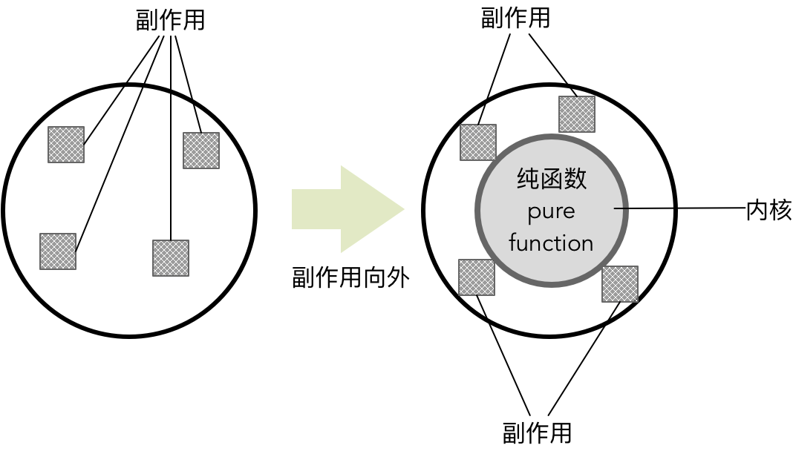
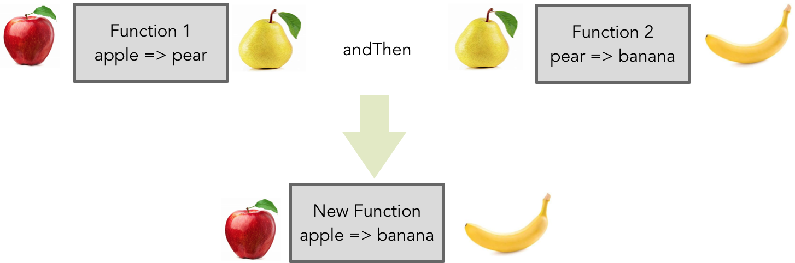

- 001 「战略篇」访谈 DDD 和微服务是什么关系？.md.html
- 002 「战略篇」开篇词：领域驱动设计，重焕青春的设计经典.md.html
- 003 领域驱动设计概览.md.html
- 004 深入分析软件的复杂度.md.html
- 005 控制软件复杂度的原则.md.html
- 006 领域驱动设计对软件复杂度的应对（上）.md.html
- 007 领域驱动设计对软件复杂度的应对（下）.md.html
- 008 软件开发团队的沟通与协作.md.html
- 009 运用领域场景分析提炼领域知识（上）.md.html
- 010 运用领域场景分析提炼领域知识（下）.md.html
- 011 建立统一语言.md.html
- 012 理解限界上下文.md.html
- 013 限界上下文的控制力（上）.md.html
- 014 限界上下文的控制力（下）.md.html
- 015 识别限界上下文（上）.md.html
- 016 识别限界上下文（下）.md.html
- 017 理解上下文映射.md.html
- 018 上下文映射的团队协作模式.md.html
- 019 上下文映射的通信集成模式.md.html
- 020 辨别限界上下文的协作关系（上）.md.html
- 021 辨别限界上下文的协作关系（下）.md.html
- 022 认识分层架构.md.html
- 023 分层架构的演化.md.html
- 024 领域驱动架构的演进.md.html
- 025 案例 层次的职责与协作关系（图文篇）.md.html
- 026 限界上下文与架构.md.html
- 027 限界上下文对架构的影响.md.html
- 028 领域驱动设计的代码模型.md.html
- 029 代码模型的架构决策.md.html
- 030 实践 先启阶段的需求分析.md.html
- 031 实践 先启阶段的领域场景分析（上）.md.html
- 032 实践 先启阶段的领域场景分析（下）.md.html
- 033 实践 识别限界上下文.md.html
- 034 实践 确定限界上下文的协作关系.md.html
- 035 实践 EAS 的整体架构.md.html
- 036 「战术篇」访谈：DDD 能帮开发团队提高设计水平吗？.md.html
- 037 「战术篇」开篇词：领域驱动设计的不确定性.md.html
- 038 什么是模型.md.html
- 039 数据分析模型.md.html
- 040 数据设计模型.md.html
- 041 数据模型与对象模型.md.html
- 042 数据实现模型.md.html
- 043 案例 培训管理系统.md.html
- 044 服务资源模型.md.html
- 045 服务行为模型.md.html
- 046 服务设计模型.md.html
- 047 领域模型驱动设计.md.html
- 048 领域实现模型.md.html
- 049 理解领域模型.md.html
- 050 领域模型与结构范式.md.html
- 051 领域模型与对象范式（上）.md.html
- 052 领域模型与对象范式（中）.md.html
- 053 领域模型与对象范式（下）.md.html
- 054 领域模型与函数范式.md.html
- 055 领域驱动分层架构与对象模型.md.html
- 056 统一语言与领域分析模型.md.html
- 057 精炼领域分析模型.md.html
- 058 彩色 UML 与彩色建模.md.html
- 059 四色建模法.md.html
- 060 案例 订单核心流程的四色建模.md.html
- 061 事件风暴与业务全景探索.md.html
- 062 事件风暴与领域分析建模.md.html
- 063 案例 订单核心流程的事件风暴.md.html
- 064 表达领域设计模型.md.html
- 065 实体.md.html
- 066 值对象.md.html
- 067 对象图与聚合.md.html
- 068 聚合设计原则.md.html
- 069 聚合之间的关系.md.html
- 070 聚合的设计过程.md.html
- 071 案例 培训领域模型的聚合设计.md.html
- 072 领域模型对象的生命周期-工厂.md.html
- 073 领域模型对象的生命周期-资源库.md.html
- 074 领域服务.md.html
- 075 案例 领域设计模型的价值.md.html
- 076 应用服务.md.html
- 077 场景的设计驱动力.md.html
- 078 案例 薪资管理系统的场景驱动设计.md.html
- 079 场景驱动设计与 DCI 模式.md.html
- 080 领域事件.md.html
- 081 发布者—订阅者模式.md.html
- 082 事件溯源模式.md.html
- 083 测试优先的领域实现建模.md.html
- 084 深入理解简单设计.md.html
- 085 案例 薪资管理系统的测试驱动开发（上）.md.html
- 086 案例 薪资管理系统的测试驱动开发（下）.md.html
- 087 对象关系映射（上）.md.html
- 088 对象关系映射（下）.md.html
- 089 领域模型与数据模型.md.html
- 090 领域驱动设计对持久化的影响.md.html
- 091 领域驱动设计体系.md.html
- 092 子领域与限界上下文.md.html
- 093 限界上下文的边界与协作.md.html
- 094 限界上下文之间的分布式通信.md.html
- 095 命令查询职责分离.md.html
- 096 分布式柔性事务.md.html
- 097 设计概念的统一语言.md.html
- 098 模型对象.md.html
- 099 领域驱动设计参考过程模型.md.html
- 100 领域驱动设计的精髓.md.html
- 101 实践 员工上下文的领域建模.md.html
- 102 实践 考勤上下文的领域建模.md.html
- 103 实践 项目上下文的领域建模.md.html
- 104 实践 培训上下文的业务需求.md.html
- 105 实践 培训上下文的领域分析建模.md.html
- 106 实践 培训上下文的领域设计建模.md.html
- 107 实践 培训上下文的领域实现建模.md.html
- 108 实践 EAS 系统的代码模型.md.html
- 109 后记：如何学习领域驱动设计.md.html
- 捐赠
054 领域模型与函数范式
函数范式
REA 的 Ken Scambler 认为函数范式的主要特征为：模块化（Modularity）、抽象化（Abstraction）和可组合（Composability），这三个特征可以帮助我们编写简单的程序。
通常，为了降低系统的复杂度，都需要将系统分解为多个功能的组成部分，每个组成部分有着清晰的边界。模块化的编码范式需要支持实现者能够轻易地对模块进行替换，这就要求模块具有隔离性，避免在模块之间出现太多的纠缠。函数范式以“函数”为核心，作为模块化的重要组成部分。函数范式要求函数均为没有副作用的纯函数（Pure Function）。在推断每个函数的功能时，由于函数没有产生副作用，就可以不考虑该函数当前所处的上下文，形成清晰的隔离边界。这种相互隔离的纯函数使得模块化成为可能。
函数的抽象能力不言而喻，因为它本质上是一种将输入类型转换为输出类型的转换行为。任何一个函数都可以视为一种转换（Transform），这是对行为的最高抽象，代表了类型（Type）之间的某种动作。极端情况下，我们甚至不用考虑函数的名称和类型，只需要关注其数学本质：f(x) = y。其中，x 是输入，y 是输出，f 就是极度抽象的函数。
函数范式领域模型的核心要素为代数数据类型（Algebraic Data Type，ADT）和纯函数。代数数据类型表达领域概念，纯函数表达领域行为。由于二者皆被定义为不变的、原子的，因此在类型的约束规则下可以对它们进行组合。可组合的特征使得函数范式建立的领域模型可以由简单到复杂，利用组合子来表现复杂的领域逻辑。
代数数据类型
代数数据类型借鉴了代数学中的概念，作为一种函数式数据结构，体现了函数范式的数学意义。通常，代数数据类型不包含任何行为。它利用和类型（Sum Type） 来展示相同抽象概念的不同组合，使用积类型（Product Type） 来展示同一个概念不同属性的组合。
和与积是代数中的概念，它们在函数范式中体现了类型的两种组合模式。和就是加，用以表达一种类型是它的所有子类型之和。例如表达时间单位的 TimeUnit 类型：
sealed trait TimeUnit
case object Days extends TimeUnit
case object Hours extends TimeUnit
case object Minutes extends TimeUnit
case object Seconds extends TimeUnit
case object MilliSeconds extends TimeUnit
case object MicroSeconds extends TimeUnit
case object NanoSeconds extends TimeUnit
说明：由于 Java 并非真正的函数式语言，较难表达一些函数式特性，因此，本节内容的代码使用 Scala 语言作为示例。
在上述模型中，TimeUnit 是对时间单位概念的一个抽象。定义为和类型，说明它的实例只能是以下的任意一种：Days、Hours、Minutes、Seconds、MilliSeconds、MicroSeconds 或 NanoSeconds。这是一种逻辑或的关系，用加号来表示：
type TimeUnit = Days + Hours + Minutes + Seconds + MilliSeconds + MicroSeconds + NanoSeconds
积类型体现了一个代数数据类型是其属性组合的笛卡尔积，例如一个员工类型：
case class Employee(number: String, name: String, email: String, onboardingDate: Date)
它表示 Employee 类型是 (String, String, String, Date) 组合的集合，也就是这四种数据类型的笛卡尔积，在类型语言中可以表达为：
type Employee = (String, String, String, Date)
也可以用乘号来表示这个类型的定义：
type Employee = String * String * String * Date
和类型和积类型的这一特点体现了代数数据类型的组合（Combinable）特性。代数数据类型的这两种类型并非互斥的，有的代数数据类型既是和类型，又是积类型，例如银行的账户类型：
sealed trait Currency
case object RMB extends Currency
case object USD extends Currency
case object EUR extends Currency
case class Balance(amount: BigDecimal, currency: Currency)
sealed trait Account {
def number: String
def name: String
}
case class SavingsAccount(number: String, name: String, dateOfOpening: Date) extends Account
case class BilledAccount(number: String, name: String, dateOfOpening: Date, balance: Balance) extends Account
代码中的 Currency 被定义为和类型，Balance 为积类型。Account 首先是和类型，它的值要么是 SavingsAccount，要么是 BilledAccount；同时，每个类型的 Account 又是一个积类型。
代数数据类型与对象范式的抽象数据类型有着本质的区别。前者体现了数学计算的特性，具有不变性。使用 Scala 的 case object 或 case class 语法糖会帮助我们创建一个不可变的抽象。当我们创建了如下的账户对象时，它的值就已经确定，不可改变：
val today = Calendar.getInstance.getTime
val balance = Balance(10.0, RMB)
val account = BilledAccount("980130111110043", "Bruce Zhang", today, balance)
数据的不变性使得代码可以更好地支持并发，可以随意共享值而无需承受对可变状态的担忧。不可变数据是函数式编程中实践的重要原则之一，它可以与纯函数更好地结合。
代数数据类型既体现了领域概念的知识，同时还通过和类型和积类型定义了约束规则，从而建立了严格的抽象。例如类型组合 (String, String, Date) 是一种高度的抽象，但它却丢失了领域知识，因为它缺乏类型标签，如果采用积类型方式进行定义，则在抽象的同时，还约束了各自的类型。和类型在约束上更进了一步，它将变化建模在一个特定数据类型内部，并限制了类型的取值范围。和类型与积类型结合起来，与操作代数数据类型的函数放在一起，然后利用模式匹配来实现表达业务规则的领域行为。
我们以 Robert Martin 在《敏捷软件开发》一书中给出的薪资管理系统需求为例，利用函数范式的建模方式来说明代数数据类型的优势。需求描述如下：
公司雇员有三种类型。一种雇员是钟点工，系统会按照雇员记录中每小时报酬字段的值对他们进行支付。他们每天会提交工作时间卡，其中记录了日期以及工作小时数。如果他们每天工作超过 8 小时，超过部分会按照正常报酬的 1.5 倍进行支付。支付日期为每周五。月薪制的雇员以月薪进行支付。每个月的最后一个工作日对他们进行支付。在雇员记录中有月薪字段。销售人员会根据他们的销售情况支付一定数量的酬金（Commssion）。他们会提交销售凭条，其中记录了销售的日期和数量。在他们的雇员记录中有一个酬金报酬字段。每隔一周的周五对他们进行支付。
我们现在要计算公司雇员的薪资。从需求看，我们需要建立的领域模型是雇员，它是一个积类型。注意，需求虽然清晰地勾勒出三种类型的雇员，但实则它们的差异体现在收入的类型上，这种差异体现为和类型不同的值。于是，可以得到由如下代数数据类型呈现的领域模型：
// ADT 定义，体现了领域概念
// Amount 是一个积类型，Currency 则为前面定义的和类型
calse class Amount(value: BigDecimal, currency: Currency) {
// 实现了运算符重载，支持 Amount 的组合运算
def +(that: Amount): Amount = {
require(that.currency == currency)
Amount(value + that.value, currency)
}
def *(times: BigDecimal): Amount = {
Amount(value * times, currency)
}
}
//以下类型皆为积类型，分别体现了工作时间卡与销售凭条领域概念
case class TimeCard(startTime: Date, endTimeDate)
case class SalesReceipt(date: Date, amount: Amount)
//支付周期是一个隐藏概念，不同类型的雇员支付周期不同
case class PayrollPeriod(startDate: Date, endDate: Date)
//Income 的抽象表示成和类型与乘积类型的组合
sealed trait Income
case class WeeklySalary(feeOfHour: Amount, timeCards: List[TimeCard], payrollPeriod: PayrollPeriod) extends Income
case class MonthlySalary(salary: Amount, payrollPeriod: PayrollPeriod) extends Income
case class Commission(salary: Amount, saleReceipts: List[SalesReceipt], payrollPeriod: PayrollPeriod)
//Employee 被定义为积类型，它组合的 Income 具有不同的抽象
case class Employee(number: String, name: String, onboardingDate: Date, income: Income)
在定义了以上由代数数据类型组成的领域模型之后，即可将其与领域行为结合起来，例如计算每个雇员的收入。由于 Income 被定义为和类型，它表达的是一种逻辑或的关系，因此它的每个子类型（称为 ADT 变体）都将成为模式匹配的分支。和类型的组合有着确定的值（类型理论的术语将其称之为 Inhabitant），例如 Income 和类型的值为 3，则模式匹配的分支就应该是 3 个，这就使得 Scala 编译器可以检查模式匹配的穷尽性。如果模式匹配缺少了对和类型的值表示，编译器都会给出警告。倘若和类型增加了一个新的值，编译器也会指出所有需要新增 ADT 变体来更新模式匹配的地方。针对 Income 积类型，可以利用模式匹配结合业务规则对它进行解构，代码如下所示：
def calculateIncome(employee: Employee): Amount = employee.income match {
case WeeklySalary(fee, timeCards, _) => weeklyIncomeOf(fee, timeCards)
case MonthlySalary(salary, _) => salary
case Commision(salary, saleReceipts, _) => salary + commistionOf(saleReceipts)
}
calculateIncome() 是一个纯函数，它利用模式匹配，针对 Employee 的特定 Income 类型计算雇员的不同收入。
纯函数
在函数范式中，往往使用纯函数（Pure Function）来表现领域行为。所谓“纯函数”，就是指没有副作用（Side Effects）的函数。《Scala 函数式编程》认为常见的副作用包括：
- 修改一个变量
- 直接修改数据结构
- 设置一个对象的成员
- 抛出一个异常或以一个错误终止
- 打印到终端或读取用户的输入
- 读取或写入一个文件
- 在屏幕上绘画
例如，读取花名册文件对内容进行解析，获得收件人电子邮件列表的函数为：
def parse(rosterPath: String): List[Email] = {
val lines = readLines(rosterPath)
lines.filter(containsValidEmail(_)).map(toEmail(_))
}
代码中的 readLines() 函数需要读取一个外部的花名册文件，这是引起副作用的一个原因。该副作用为单元测试带来了影响。要测试 parse() 函数，就需要为它事先准备好一个花名册文件，增加了测试的复杂度。同时，该副作用使得我们无法根据输入参数推断函数的返回结果，因为读取文件可能出现一些未知的错误，如读取文件错误，又或者有其他人同时在修改该文件，就可能抛出异常或者返回一个不符合预期的邮件列表。
要将 parse() 定义为纯函数，就需要分离这种副作用，函数的计算结果就不会受到任何内部或外部过程状态改变的影响。一旦去掉副作用，调用函数返回的结果就与直接使用返回结果具有相同效果，二者可以互相替换，这称之为“引用透明（Referential Transparency）”。引用透明的替换性可以用于验证一个函数是否是纯函数。假设客户端要根据解析获得的电子邮件列表发送邮件，解析的花名册文件路径为 roster.txt。假定解析该花名册得到的电子邮件列表为：
List(Email("[email protected]"), Email("[email protected]"))
如果 parse() 是一个纯函数，就需要遵循引用透明的原则，则如下函数调用的行为应该完全相同：
// 调用解析方法
send(parse("roster.txt"))
// 直接调用解析结果
send(List(Email("[email protected]"), Email("[email protected]")))
显然并非如此。后者传入的参数是一个电子邮件列表，而前者除了提供了电子邮件列表之外，还读取了花名册文件。函数获得的电子邮件列表不是由花名册文件路径决定的，而是由读取文件的内容决定。读取外部文件的这种副作用使得我们无法根据确定的输入参数推断出确定的计算结果。要将 parse() 改造为支持引用透明的纯函数，就需要分离副作用，即将产生副作用的读取外部文件功能推向 parse() 函数外部：
def parse(content: List[String]): List[Emial] =
content.filter(containsValidEmail(_)).map(toEmail(_))
现在，以下代码的行为就是完全相同的：
send(parse(List("liubei, [email protected]", "noname", "guanyu, [email protected]")))
send(List(Email("[email protected]"), Email("[email protected]")))
这意味着改进后的 parse() 可以根据输入结果推断出函数的计算结果，这正是引用透明的价值。保持函数的引用透明，不产生任何副作用，是函数式编程的基本原则。如果说面向对象设计需要将依赖尽可能向外推，最终采用依赖注入的方式来降低耦合；那么，函数式编程思想就是要利用纯函数来隔离变化与不变，内部由无副作用的纯函数组成，纯函数将副作用向外推，形成由不变的业务内核与可变的副作用外围组成的结构：

具有引用透明特征的纯函数更加贴近数学中的函数概念：没有计算，只有转换。转换操作不会修改输入参数的值，只是基于某种规则把输入参数值转换为输出。输入值和输出值都是不变的（Immutable），只要给定的输入值相同，总会给出相同的输出结果。例如我们定义 add1() 函数：
def add1(x: Int):Int => x + 1
基于数学函数的转换（Transformation）特征，完全可以翻译为如下代码：
def add1(x: Int): Int => x match {
case 0 => 1
case 1 => 2
case 2 => 3
case 3 => 4
// ...
}
我们看到的不是对变量 x 增加 1，而是根据x 的值进行模式匹配，然后基于业务规则返回确定的值。这就是纯函数的数学意义。
引用透明、无副作用以及数学函数的转换本质，为纯函数提供了模块化的能力，再结合高阶函数的特性，使纯函数具备了强大的组合（Combinable）特性，而这正是函数式编程的核心原则。这种组合性如下图所示：

图中的 andThen 是 Scala 语言提供的组合子，它可以组合两个函数形成一个新的函数。Scala 还提供了 compose 组合子，二者的区别在于组合函数的顺序不同。上图可以表现为如下 Scala 代码：
sealed trait Fruit {
def weight: Int
}
case class Apple(weight: Int) extends Fruit
case class Pear(weight: Int) extends Fruit
case class Banana(weight: Int) extends Fruit
val appleToPear: Apple => Pear = apple => Pear(apple.weight)
val pearToBanana: Pear => Banana = pear => Banana(pear.weight)
// 使用组合
val appleToBanana = appleToPear andThen pearToBanana
组合后得到的函数类型，以及对该函数的调用如下所示：
scala> val appleToBanana = appleToPear andThen pearToBanana
appleToBanana: Apple => Banana = <function1>
scala> appleToBanana(Apple(15))
res0: Banana = Banana(15)
除了纯函数的组合性之外，函数式编程中的 Monad 模式也支持组合。我们可以简单地将一个 Monad 理解为提供 bind 功能的容器。在 Scala 语言中，bind 功能就是 flatMap 函数。可以简单地将 flatMap 函数理解为是 map 与 flattern 的组合。例如，针对如下的编程语言列表：
scala> val l = List("scala", "java", "python", "go")
l: List[String] = List(scala, java, python, go)
对该列表执行 map 操作，对列表中的每个元素执行 toCharArray() 函数，就可以把一个字符串转换为同样是 Monad 的字符数组：
scala> l.map(lang => lang.toCharArray)
res7: List[Array[Char]] = List(Array(s, c, a, l, a), Array(j, a, v, a), Array(p, y, t, h, o, n), Array(g, o))
map 函数完成了从 List[String] 到 List[Array[Char]] 的转换。对同一个列表执行相同的转换函数，但调用 flatMap 函数：
scala> l.flatMap(lang => lang.toCharArray)
res6: List[Char] = List(s, c, a, l, a, j, a, v, a, p, y, t, h, o, n, g, o)
flatMap 函数将字符串转换为字符数组后，还执行了一次拍平操作，完成了 List[String] 到 List[Char] 的转换。
然而在 Monad 的真正实现中，flatMap 并非 map 与 flattern 的组合，相反，map 函数是 flatMap 基于 unit 演绎出来的。因此，Monad 的核心其实是 flatMap 函数：
class M[A](value: A) {
private def unit[B] (value : B) = new M(value)
def map[B](f: A => B) : M[B] = flatMap {x => unit(f(x))}
def flatMap[B](f: A => M[B]) : M[B] = ...
}
flatMap、map 和 filter 往往可以组合起来，实现更加复杂的针对 Monad 的操作。一旦操作变得复杂，这种组合操作的可读性就会降低。例如，我们将两个同等大小列表中的元素项相乘，使用 flatMap 与 map 的代码为：
val ns = List(1, 2)
val os = List(4, 5)
val qs = ns.flatMap(n => os.map(o => n * o))
这样的代码并不好理解。为了提高代码的可读性，Scala 提供了 for-comprehaension。它本质上是 Monad 的语法糖，组合了 flatMap、map 与 filter 等函数；但从语法上看，却类似一个 for 循环，这就使得我们多了一种可读性更强的调用 Monad 的形式。同样的功能，使用 for-comprehaension 语法糖就变成了：
val qs = for {
n <- ns
o <- os
} yield n * o
这里演示的 for 语法糖看起来像是一个嵌套循环，分别从 ns 和 os 中取值，然后利用 yield 生成器将计算得到的积返回为一个列表；实质上，这段代码与使用 flatMap 和 map 的代码完全相同。
在使用纯函数表现领域行为时，我们可以让纯函数返回一个 Monad 容器，再通过 for-comprehaension 进行组合。这种方式既保证了代码对领域行为知识的体现，又能因为不变性避免状态变更带来的缺陷。同时，结合纯函数的组合子特性，使得代码的表现力更加强大，非常自然地传递了领域知识。例如，针对下订单场景，需要验证订单，并对验证后的订单进行计算。验证订单时，需要验证订单自身的合法性、客户状态以及库存；对订单的计算则包括计算订单的总金额、促销折扣与运费。
在对这样的需求进行领域建模时，我们需要先寻找到表达领域知识的各个原子元素，包括具体的代数数据类型和实现原子功能的纯函数：
// 积类型
case class Order(id: OrderId, customerId: CustomerId, desc: String, totalPrice: Amount, discount: Amount, shippingFee: Amount, orderItems: List[OrderItem])
// 以下是验证订单的行为，皆为原子的纯函数，并返回 scalaz 定义的 Validation Monad
val validateOrder : Order => Validation[Order, Boolean] = order =>
if (order.orderItems isEmpty) Failure(s"Validation failed for order $order.id")
else Success(true)
val checkCustomerStatus: Order => Validation[Order, Boolean] = order =>
Success(true)
val checkInventory: Order => Validation[Order, Boolean] = order =>
Success(true)
// 以下定义了计算订单的行为，皆为原子的纯函数
val calculateTotalPrice: Order => Order = order =>
val total = totalPriceOf(order)
order.copy(totalPrice = total)
val calculateDiscount: Order => Order = order =>
order.copy(discount = discountOf(order))
val calculateShippingFee: Order => Order = order =>
order.copy(shippingFee = shippingFeeOf(order))
这些纯函数是原子的、分散的、可组合的，接下来就可以利用纯函数与 Monad 的组合能力，编写满足业务场景需求的实现代码：
val order = ...
// 组合验证逻辑
// 注意返回的 orderValidated 也是一个 Validation Monad
val orderValidated = for {
_ <- validateOrder(order)
_ <- checkCustomerStatus(order)
c <- checkInventory(order)
} yield c
if (orderValidated.isSuccess) {
// 组合计算逻辑，返回了一个组合后的函数
val calculate = calculateTotalPrice andThen calculateDiscount andThen calculateShippingFee
// 返回具有订单总价、折扣与运费的订单对象
// 在计算订单的过程中，订单对象是不变的
val calculatedOrder = calculate(order)
// ...
}
函数范式与领域模型
遵循函数范式建立领域模型时，代数数据类型与纯函数是主要的建模元素。代数数据类型中的和类型与积类型可以表达领域概念，纯函数则用于表达领域行为。它们都被定义为不变的原子类型，然后再将这些原子的类型与操作组合起来，满足复杂业务逻辑的需要。这是函数式编程中面向组合子（Combinator）的建模方法，它与面向对象的建模方法存在思想上的不同。
面向对象的建模方法是一种归纳法，通过分析和归纳需求，找到问题域并逐级分解问题，然后通过对象来表达领域逻辑，并以职责的角度分析这些领域逻辑，按照角色把职责分配给各自的对象，通过对象之间的协作实现复杂的领域行为。面向组合子的建模方法则是一种演绎法，通过在领域需求中寻找和定义最基本的原子操作，然后根据基本的组合规则将这些原子类型与原子函数组合起来。
因此，函数范式对领域建模的影响是全方位的，它与对象范式看待世界的角度迥然不同。对象范式是在定义一个完整的世界，然后以上帝的身份去规划各自行使职责的对象；函数范式是在组合一个完整的世界，它就像古代哲学家一般，看透了物质的本原而识别出不可再分的原子微粒，然后再按照期望的方式组合这些微粒来创造世界。故而，采用函数范式进行领域建模，关键是组合子包括组合规则的设计，既要简单，又要完整，还需要保证每个组合子的正交性，如此才能对其进行组合，互不冗余，互不干涉。这些组合子，就是前面介绍的代数数据类型和纯函数。
通过前面给出的案例，我们发现函数范式的领域模型颠覆了面向对象思想中“贫血模型是坏的”这一观点。事实上，函数范式的贫血模型不同于结构范式和对象范式的贫血模型。结构范式是将过程与数据分离，这些过程实现的是一个完整的业务场景，由于缺乏完整的封装性，因而无法控制过程与数据的修改对其他调用者带来的影响。对象范式要求将数据与行为封装在一起，就是为了解决这一问题。函数范式虽然建立的是贫血模型，但它的模块化、抽象化与可组合特征降低了变化带来的影响。在组合这些组合子时，通过引入高内聚松耦合的模块对这些功能进行分组，就能避免细粒度的组合子过于散乱，形成更加清晰的代码层次。
Debasish Ghosh 总结了函数范式的基本原则，用以建立更好的领域模型：
- 利用函数组合的力量，用小函数组装成一个大函数，获得更好的组合性。
- 纯粹，领域模型的很多部分都由引用透明的表达式组成。
- 通过方程式推导，可以很容易地推导和验证领域行为。
不止如此，根据代数数据类型的不变性，以及对模式匹配的支持，它还天生适合表达领域事件。例如地址变更事件，就可以用一个积类型来表示：
case class AddressChanged(eventId: EventId, customerId: CustomerId, oldAddress: Address, newAddress: Address, occurred: Time)
我们还可以用和类型对事件进行抽象，这样就可以在处理事件时运用模式匹配：
sealed trait Event {
def eventId: EventId
def occurred: Time
}
case class AddressChanged(eventId: EventId, customerId: CustomerId, oldAddress: Address, newAddress: Address, occurred: Time) extends Event
case class AccountOpened(eventId: EventId, Account: Account, occurred: Time) extends Event
def handle(event: Event) = event match {
case ac: AddressChanged => ...
case ao: AccountOpened => ...
}
函数范式中的代数数据类型仍然可以用来表示实体和值对象，但它们都是不变的，二者的区别主要在于是否需要定义唯一标识符。聚合的概念仍然存在，如果使用 Scala 语言，往往会为聚合定义满足角色特征的 trait，这样就可以使得聚合的实现通过混入多个 trait 来完成代数数据类型的组合。由于资源库（Repository）会与外部资源进行协作，意味着它会产生副作用，因此遵循函数式编程思想，往往会将其推向纯函数的外部。在函数式语言中，可以利用柯里化（Currying，又译作咖喱化）或者 Reader Monad 来推迟对资源库具体实现的注入。
主流的领域驱动设计往往以对象范式作为建模范式，利用函数范式建立的领域模型多多少少显得有点“另类”，因此我将其称之为非主流的领域驱动设计。这里所谓的“非主流”，仅仅是从建模范式的普及性角度来考虑的，并不能说明二者的优劣与高下之分。事实上，函数范式可以很好地与事件驱动架构结合在一起，这是一种以领域事件作为模型驱动设计的驱动力思想。针对事件进行建模，则任何业务流程皆可用状态机来表达。状态的迁移，就是命令（Command）或者决策（Decision）对事件的触发。我们还可以利用事件风暴（Event Storming）帮助我们识别这些事件，而事件的不变性特征又可以很好地与函数式编程结合起来。
如果采用命令查询职责分离（CQRS）模式，那么在命令端，将由命令与事件组成一系列异步的非阻塞消息流。这种对消息的认识，恰好可以与响应式编程（Reactive Programming）结合起来。诸如 ReactiveX 这样的响应式编程框架在参考了迭代器模式与观察者模式的基础上，结合了函数式编程思想，以事件处理的形式实现了异步非阻塞处理，在满足系统架构灵活性与伸缩性的同时，提高了事件处理的响应能力。
显然，围绕着不变的事件为中心，包括响应式编程、事件风暴、事件溯源与命令查询职责分离模式都可以与函数范式有效地结合起来，形成一种事件模型驱动设计（Event Model Driven Design，EDDD）方法。与事件驱动架构不同，事件模型驱动设计可以算是领域驱动设计的一种分支。作为一种设计方法学，它的实践与模式同样涵盖了战略设计与战术设计等多个层次，且可以与领域驱动设计的模式如限界上下文、领域事件、领域服务等结合起来。在金融、通信等少数领域，已经开始了对这种建立在函数范式基础之上的领域驱动设计的尝试，与它们相关的知识可以写成厚厚的一本大书，在这里就不再赘述了。
© 2019 - 2023 Liangliang Lee. Powered by gin and hexo-theme-book.